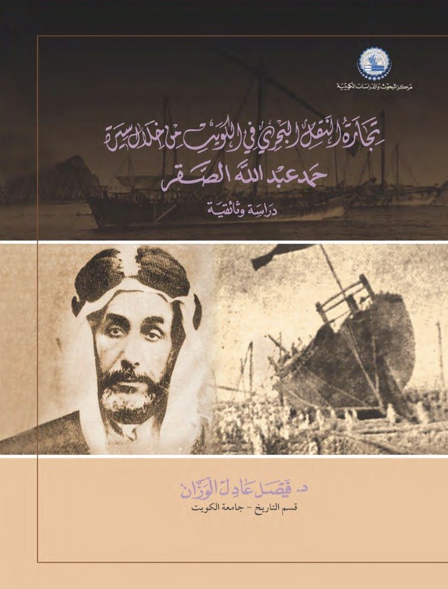

نُشر ٢٠١٩ · صفحات من كتاب د. فيصل عادل الوزان، قسم التاريخ بجامعة الكويت؛ مركز البحوث والدراسات الكويتية، ٢٠١٩
تجارة النقل البحري في الكويت من خلال سيرة حمد عبدالله الصقر: صفحات القطامي
ما هي
دراسة وثائقية عن التاجر حمد عبدالله الصقر. تنقل الصفحة ٩ من مقابلة النوخذة عبدالوهاب بن عيسى القطامي سنة ١٩٦٢ مع رضا الفيلي عن دور الأسطول الكويتي في تموين موانئ الخليج العربي كله في الحرب العالمية الأولى. وتذكر الصفحة ١٣ القطامي بين أسر الكويت. وتذكر الصفحة ٢٦ منيرة بنت حمد الصقر، وفي حاشيتها ٤٤ أنها تزوجت المرحوم أحمد عبدالعزيز القطامي. وتنشر الصفحتان ١٨٢ و١٨٣ رسالة سنة ١٩٣٠ فيها أن محمد بن قطامي سافر من كوه. وتذكر الصفحة ٢٦٣ أن أول باخرة للشيخ مبارك، اشتراها من بومبي سنة ١٩٠٧ بمئة ألف روبية وسماها «يخت مشرف»، قادها النوخذة عبدالعزيز القطامي. وتذكر الصفحة ٣٠٢ مقابلة ١٩٦٢ بين مصادر التاريخ الشفوي. وصفحات الفهرس تذكر كل قطامي في الكتاب: أحمد عبدالعزيز (ص ٢٦)، وعبدالعزيز (ص ٢٦٣)، وعبدالله (ص ٩٢)، وعبدالوهاب بن عيسى (ص ٩ و١١ و٢٣)، وعيسى (ص ٦٠ و٦٤ و٦٥ و٦٦)، والأسرة (ص ١٣).
أهميتها
دراسة جامعية مبنية على وثائق أسرة الصقر، تمس أربعة أجيال من العائلة.
صور الصفحات


ملاحظات
الصفحات ١١ و٢٣ و٦٠ و٦٤ إلى ٦٦ و٩٢ تذكر العائلة أيضا ولم تُضف إلى الموقع بعد. نعرض هنا الصفحات الأولى فقط، ويرى أفراد العائلة بعد تسجيل الدخول كل الصفحات وعددها 12.
أسماء أخرى
المصادر
د. فيصل عادل الوزان، تجارة النقل البحري في الكويت من خلال سيرة حمد عبدالله الصقر: دراسة وثائقية، مركز البحوث والدراسات الكويتية، ٢٠١٩
كيف كُتب هذا النص: مصورة من الصفحات المطبوعة.
افتح في الموقع التفاعلي